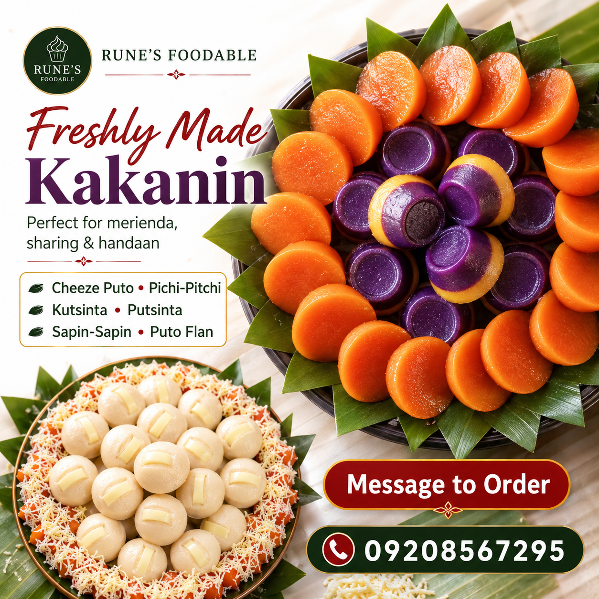
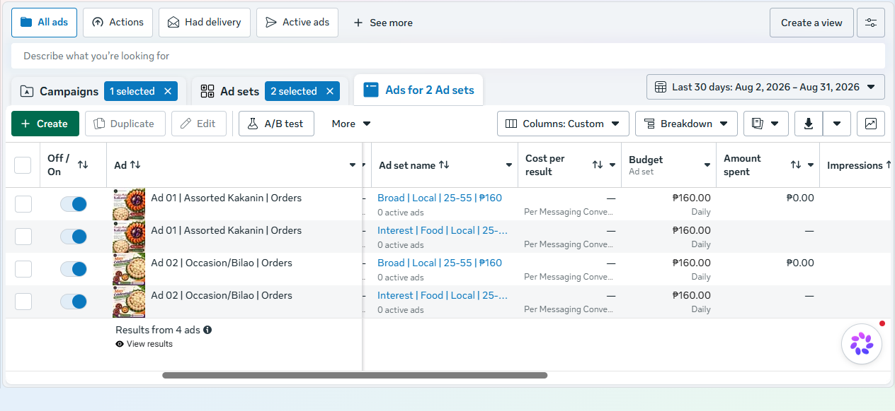
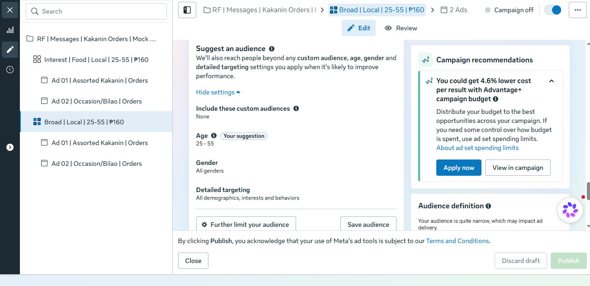
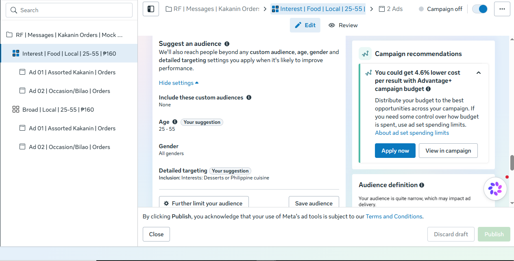
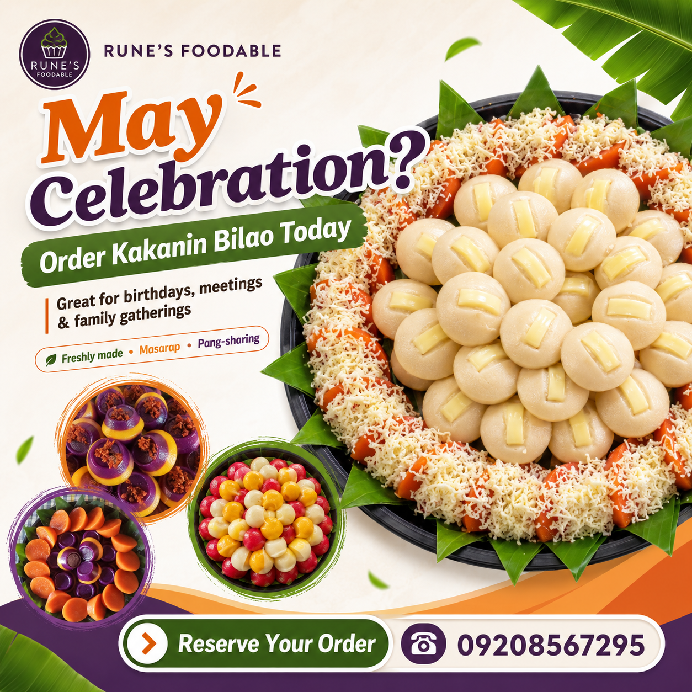
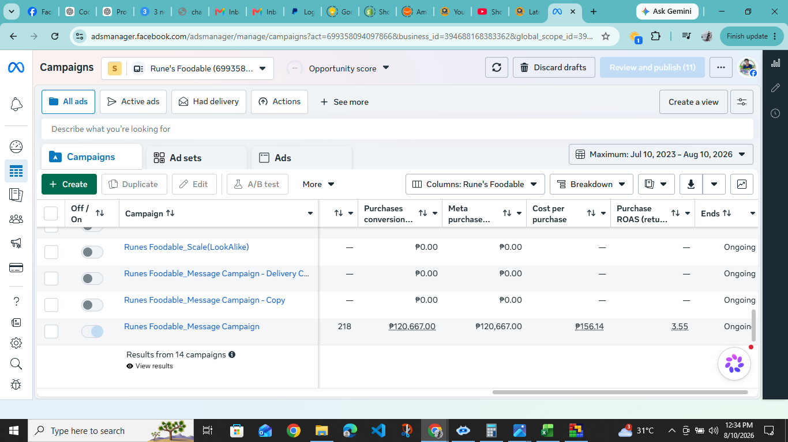

Ad Creative 01
Freshly Made Kakanin
Product-focused angle for merienda, sharing, and everyday cravings. CTA: Message to Order.
A portfolio case study demonstrating my current Meta Ads workflow for a local food business — from Messenger campaign setup and audience testing to creative strategy and performance review.
Designed to demonstrate an organized, practical campaign setup for generating local inquiries and orders through Messenger.
The mock campaign was structured to compare audience approach and creative angle while keeping the campaign goal focused on Messenger conversations.
Generate qualified local inquiries and potential orders through Messenger.
Both ad sets use the same creatives and budget so the audience approach can be compared more fairly.
Actual Meta Ads Manager screenshots from the draft setup.



The creatives were designed to test an everyday product/craving angle against an occasion-based bilao angle.

Product-focused angle for merienda, sharing, and everyday cravings. CTA: Message to Order.

Occasion-focused angle for birthdays, meetings, and family gatherings. CTA: Reserve Your Order.
These results are from a previous Rune's Foodable campaign and are separate from the mock campaign setup shown above.
This historical campaign provides evidence of prior hands-on Facebook Ads experience and performance monitoring.
Important: These numbers are historical actual results and are not presented as results of the current mock portfolio campaign.

I can support campaign setup, audience targeting, creative coordination, Messenger ad flows, and campaign monitoring for your business.